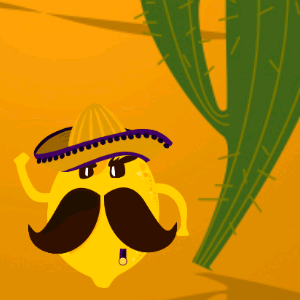

Projects

Learning Babylon.js - 160 pages e-book
Learn the basics of the 3D framework Babylon.js by creating a whole game.
This 160 pages e-book will teach you everything you need to know about Babylon.js to get the most out of it!
This 160 pages e-book will teach you everything you need to know about Babylon.js to get the most out of it!

Dungeon
A 3D demo scene (no gameplay here), exported from 3DSMax to Babylon.js.

Shinobomb
A 3D remake of the classic game Bomberman, powered by Babylon.js.
The game supports up to 4 players with gamepads. It can also be played with a keyboard (up to two players on the same keyboard).
The game supports up to 4 players with gamepads. It can also be played with a keyboard (up to two players on the same keyboard).

Block
A 3D puzzle game, made with Babylon.js.
Play with the arrow keys and try to finish all levels.
Play with the arrow keys and try to finish all levels.

Quarto
A 3D remake of the classic board game Quarto

Ramon el Lemon
My first Unity game, developped to try the new 2D features of Unity.
The game theme was given by a friend: lemons and beer.

UFO
A 2D game made with phaser.js.